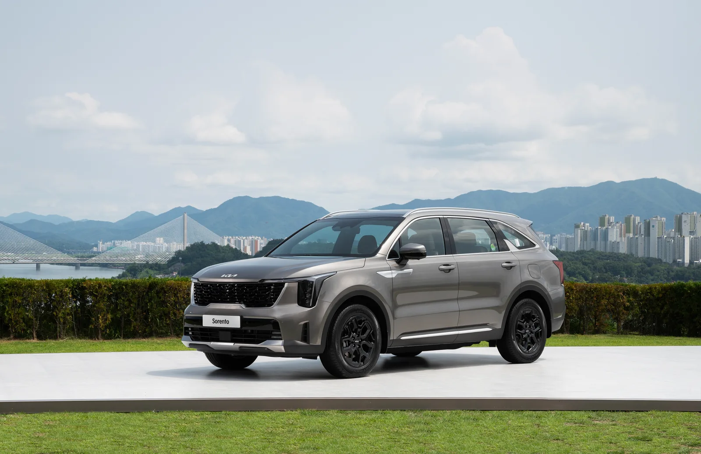
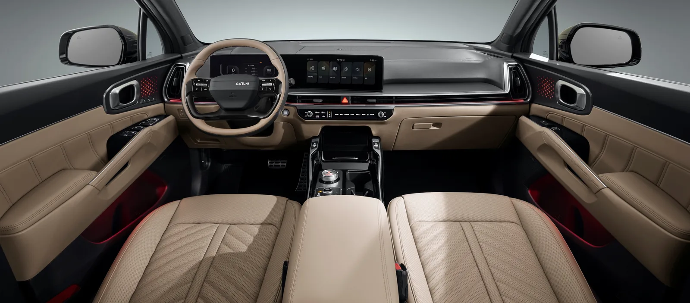
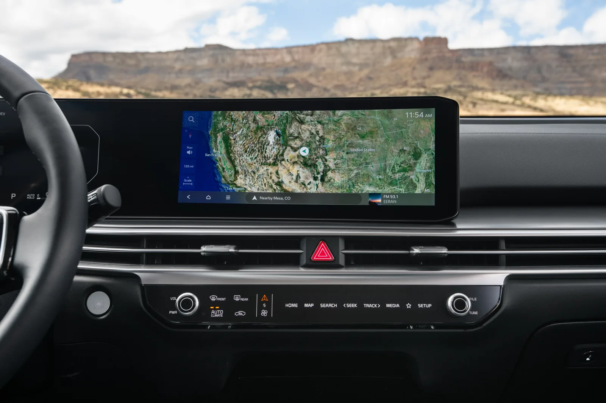
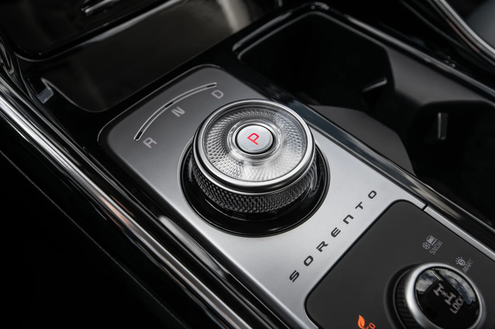
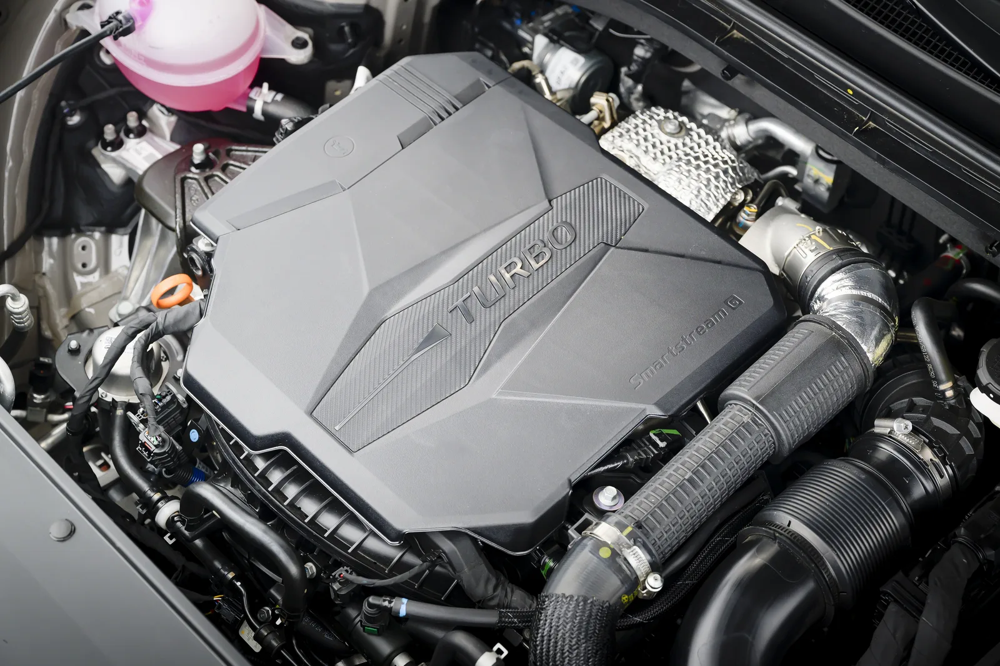
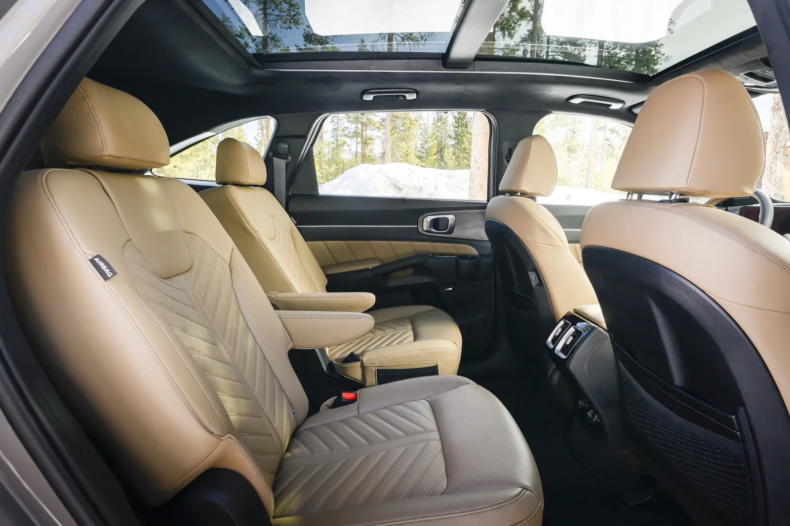
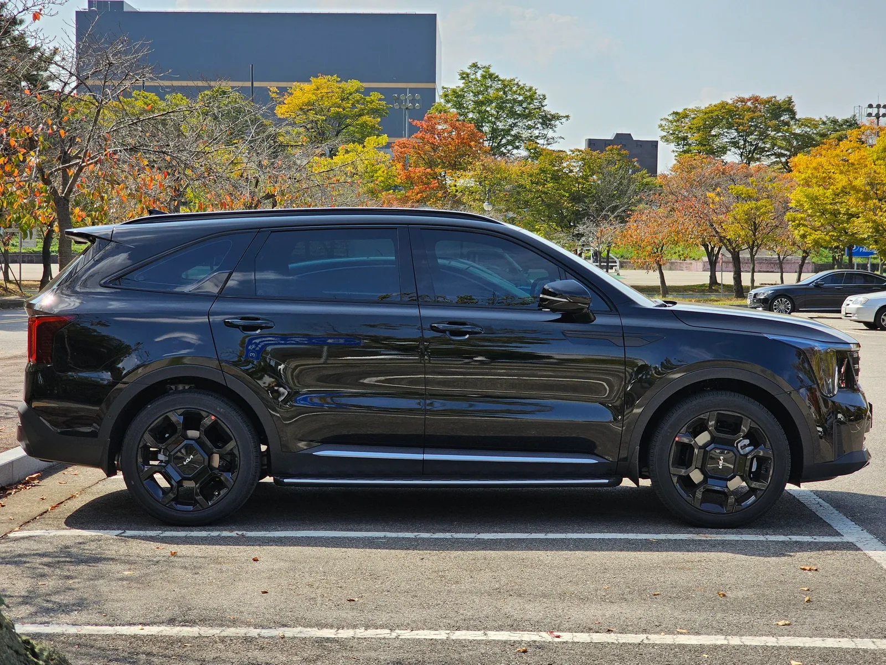
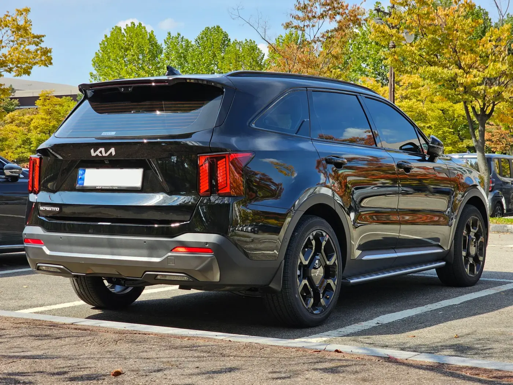
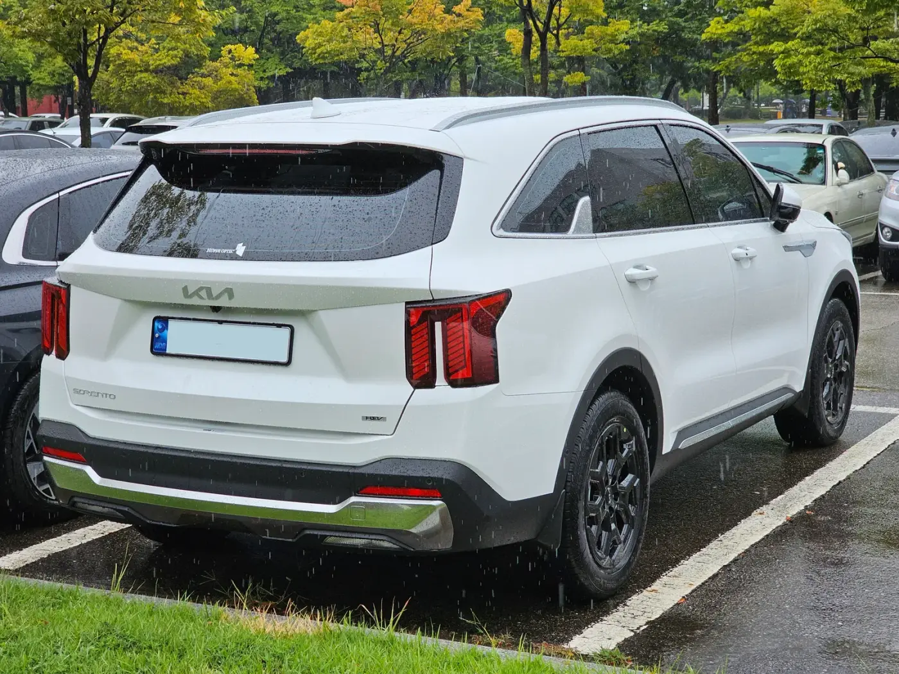

▲ 기아 더 뉴 쏘렌토 하이브리드. 2020년 출시된 4세대 모델이 2023년 부분변경을 거쳐 2026년 8월 국산차 판매 1위에 올랐다 사진=기아
2020년에 나온 차가 2026년 8월 국산차 판매 1위에 올랐다. 차세대 모델 이야기가 이미 나오고 있는 상황에서다.
기아 쏘렌토는 8월 한 달 6,397대가 팔려 그랜저(5,931대)를 466대 차이로 앞섰다(오토트리뷴·헤럴드경제 집계). 상위 10개 차종 가운데 전월보다 판매가 늘어난 차는 쏘렌토와 포터2뿐이었고, 1~8월 누적도 6만 7,976대로 승용·RV 1위다. 현행 4세대(MQ4)는 2023년 부분변경을 거쳤고, 8월 27일 연식변경을 거친 2027년형이 현재 판매 중이다. 풀체인지(MQ5)의 국내 출시는 2027년으로 미뤄진 것으로 알려졌다.
카프리즘이 직접 시승한 기사가 아니다. 부분변경 이후 나온 국내 시승기 8편과 해외 리뷰 7편, 모두 15편을 읽고, 여기에 오너 평가 3종(네이버 마이카 2건, 마이클 '모두의 차고' 실연비·만족도)을 더해 공통으로 나온 칭찬과 지적을 다시 정리했다. 가격과 제원은 기아 공식 가격표(2026년 9월 기준)로 확인했다. 해외 매체 평가는 각 원문(일부는 인터넷 아카이브 사본)을 열어 대조했다.
▲ 국내에서 운행 중인 부분변경 쏘렌토 하이브리드. 세로형 주간주행등과 넓은 그릴이 부분변경 모델의 특징이다 ⓒ Damian B Oh, Wikimedia Commons (CC BY-SA 4.0)
1. 풀체인지를 앞두고도 1위, 숫자로 먼저 보기
출시 7년 차 모델이 판매 1위를 지키는 경우는 흔하지 않다. 보통 풀체인지 소식이 나오면 신차를 기다리는 수요가 생겨 판매가 줄어든다. 쏘렌토는 반대였다. 7월 6,153대에서 8월 6,397대로 244대 늘었고, 같은 기간 완성차 5개사 전체 판매는 줄었다.
판매를 떠받치는 것은 하이브리드다. 업계 집계로 올해 상반기 쏘렌토 판매의 약 80%가 하이브리드였고, 디젤은 5.5%까지 떨어졌다. 업계 보도에 따르면 디젤은 7월 초 계약분을 끝으로 신규 생산 주문이 막혔고, 기아가 따로 단종을 발표하지는 않았다(관련 기사: 쏘렌토 디젤, 24년 만에 조용히 역사 속으로). 이번 종합에서 본 시승기와 리뷰도 대부분 하이브리드 모델을 다뤘다.
| 항목 | 내용 |
|---|---|
| 2026년 8월 판매 | 6,397대 · 국산차 1위(2위 그랜저 5,931대) |
| 1~8월 누적 | 6만 7,976대 · 승용·RV 1위 |
| 현행 세대 | 4세대 MQ4(2020년 출시) · 2023년 부분변경 · 2026년 8월 27일 2027년형 출시 |
| 파워트레인 | 1.6 터보 하이브리드, 2.5 가솔린 터보(2.2 디젤은 2027년형 가격표에 없음) |
| 차세대(MQ5) | 국내 출시 2027년으로 연기 |
차세대 모델이 왜 미뤄졌는지, 어떤 제원이 예상되는지는 쏘렌토 풀체인지의 사정에서 따로 정리했다. 이 기사는 지금 살 수 있는 현행 모델을 두고 리뷰들이 무엇을 평가했는지에 집중한다.
2. 국내외 리뷰 15편, 한 줄씩 요약

▲ 2023년 부분변경 당시 공개된 더 뉴 쏘렌토 하이브리드. 국내 시승기 대부분이 이 파워트레인으로 시승했다 사진=기아
국내 시승기는 2023년 9월부터 2024년 7월 사이에 나왔고, 대부분 하이브리드로 시승했다. 해외 리뷰는 미국·영국·호주·필리핀 매체로, 2025~2026년형 하이브리드를 주로 다뤘다. 해외 사양은 출력 표기와 트림 구성, 3열 기본 여부가 국내와 다르다. 표는 각 매체가 쓴 평가를 우리 표현으로 줄인 것이며, 원문은 링크에서 볼 수 있다.
| 매체(게재 시점) | 시승 모델 | 좋았던 점 | 아쉬운 점 |
|---|---|---|---|
| 오토뷰 (2023.11) | HEV 6인승·18인치 | 승차감과 성능의 균형, E-라이드로 방지턱 통과가 부드러움, 0→100km/h 8.0초 | 이전보다 약해진 제동 성능, 다이얼 변속기, 공조·오디오 전환형 조작계 |
| 뉴스핌 (2024.5) | HEV | 호불호 없는 디자인, 넓은 2·3열, 약 250km에서 약 15km/L | 후방 주차 충돌방지 보조가 지나치게 민감 |
| 에너지경제 (2024.7) | HEV 2WD | 뒷좌석 공간, 고속 안정감, 60~80km/h 정속에서 약 20km/L | 뚜렷한 단점 언급 없음 |
| 아시아타임즈 (2024.1) | HEV 시그니처 4WD 5인승 | 정숙성, 에르고 모션 시트 등 상위 차급 편의사양, 232km에서 약 14km/L | 측면·후면 디자인 변화가 작음 |
| 남도일보 (2023.9) | HEV 4WD 6인승 | 시동부터 조용하고 부드러운 가속, 코너에서 안정적, 52km 구간 16.1km/L | 뚜렷한 단점 언급 없음 |
| 헤럴드경제 (2024.1) | HEV 시그니처 | 강한 인상의 앞모습, 탄탄한 서스펜션과 고속 안정감 | 실연비 약 14km/L. 하이브리드치고 낮아 보일 수 있다는 단서를 달았지만 차체 크기를 생각하면 만족스럽다고 평가 |
| 카가이 (2023.8, 현장 리뷰) | 부분변경 공개 차량 | 12.3인치 커브드 디스플레이, 새 헤드램프 디자인 | 3열은 싼타페가 낫다는 현장 설명, 전환형 조작계, 센터콘솔 수납 |
| 모터그래프 (2024.1, 싼타페 비교) | 싼타페 HEV 시승 중 쏘렌토 비교 | 승차감과 넓은 실내 | 주행 완성도는 신형 싼타페가 앞선다는 평가 |
| Consumer Reports (미국) | 2025 HEV | 조용한 실내, 요철을 부드럽게 넘기는 승차감, 쉬운 주차 | 자체 측정 28mpg(약 11.9km/L)로 경쟁 HEV보다 낮음, 3열 협소, 조작계 |
| Edmunds (미국, 2026.5) | 2026 HEV | 0→60mph 7.6초, 매끄러운 변속과 모드 전환, 넓은 1·2열, 가격 대비 사양 | 3열을 자주 쓰면 더 큰 차가 낫다는 지적 |
| GreenCars (미국, 2026.5) | 2026 HEV SX 프레스티지 AWD | 작은 차체에 3열, 실내 품질, 실측 33.2mpg(약 14.1km/L) | 3열 무릎 공간, 기어 셀렉터 오조작, 터치식 공조 조작 |
| Clean Fleet Report (미국, 2026.5) | 2026 HEV X-Line AWD | 286마일 평균 34.6mpg(약 14.7km/L), 부드러운 승차감 | 3열 머리공간, 3열 사용 시 적재공간 부족 |
| Carwow (영국, 2025.11) | 2026 영국 사양 | 넓은 실내와 7인승 활용성, 풍부한 기본 사양 | 저속에서 단단한 서스펜션, 어두운 실내, 3열은 아이용 |
| CarExpert (호주, 2024.12) | GT-Line HEV AWD | 도심 위주 6.8L/100km(약 14.7km/L), 두 개의 12.3인치 화면, 성인이 앉을 만한 2열과 동급에서 실용적인 3열 | 고속도로에서 늘어나는 연료 소모, 짧은 정비 주기(12개월·1만km), 하이브리드는 최상위 트림 전용 |
| Top Gear Philippines (2025.2) | 2025 SX HEV AWD | 밝고 고급스러운 실내, 최상위 트림 기준 가격 대비 사양 | 3열 승하차 불편, 인포테인먼트가 현대차와 차별화가 적음 |
📍 해외 리뷰를 읽을 때 주의할 점
기아 미국 법인은 하이브리드 시스템 합산 출력을 227hp·258lb-ft로 공개하고 있고, 미국은 하이브리드에도 3열이 기본인 트림이 많다. 영국·호주는 7인승이 기본이다. 반면 국내 쏘렌토는 5인승이 기본이고 6·7인승은 옵션이다. 해외 리뷰의 3열 평가는 차체가 같아 그대로 참고할 수 있지만, 가격·트림 평가는 국내 상황과 맞지 않는다.
3. 합의도 표: 여러 매체가 같은 말을 한 대목
15편을 항목별로 나눠, 같은 칭찬이나 지적이 몇 편에서 나왔는지 셌다. 한 매체가 한 번이라도 분명히 언급하면 1로 셌고, 언급이 없으면 셈에서 뺐다. 편수가 많을수록 '누가 타도 느끼는 특성'에 가깝다고 볼 수 있다.
| 평가 항목 | 언급 편수 | 언급한 매체 |
|---|---|---|
| 👍 1·2열 공간이 넓고 가족용으로 충분 | 8편 | 뉴스핌, 에너지경제, 남도일보, 모터그래프, Edmunds, Carwow, CarExpert, Clean Fleet Report |
| 👍 가격 대비 편의·안전 사양이 풍부 | 7편 | 아시아타임즈, 에너지경제, Edmunds, Carwow, GreenCars, Clean Fleet Report, Top Gear PH |
| 👍 하이브리드의 정숙성·부드러운 모드 전환 | 6편 | 아시아타임즈, 남도일보, Consumer Reports, Edmunds, Carwow, Clean Fleet Report |
| 👍 도심 연비가 좋다(시승 중 14km/L 이상) | 7편 | 뉴스핌, 에너지경제, 남도일보, 아시아타임즈, CarExpert, Clean Fleet Report, GreenCars |
| 👎 3열은 성인에게 좁거나 드나들기 불편 | 7편 | 카가이, Consumer Reports, Edmunds, GreenCars, Clean Fleet Report, Carwow, Top Gear PH |
| 👎 공조·미디어 전환형 조작계가 불편 | 4편 | 오토뷰, 카가이, Consumer Reports, GreenCars |
| 👎 연비가 경쟁차보다 못하거나 고속에서 나빠진다 | 2편 | Consumer Reports, CarExpert(고속도로) |
| 👎 변속 다이얼·셀렉터 조작 | 2편 | 오토뷰, GreenCars |
| 🔀 승차감: 부드럽다 vs 단단하다 | 4편 vs 2편 | 부드럽다: Consumer Reports, Clean Fleet Report, 모터그래프, 오토뷰 / 단단하다(탄탄하다): Carwow, 헤럴드경제 |
가장 많이 반복된 평가는 칭찬과 지적 한 가지씩이다. 1·2열 공간(8편)과 3열의 한계(7편)다. 둘 다 결국 차체 크기 이야기다. 쏘렌토는 전장 4,815mm로 중형 SUV 치고는 짧은 편인데, 이 크기에서 1·2열은 넉넉하게 뽑았고 3열은 비상용 수준으로 남겨 뒀다. GreenCars는 이를 두고 "큰 덩치 없이 가족용 융통성을 준다는 것이 가장 큰 매력"이라고 정리했다.
연비 평가는 조건에 따라 갈렸다. 국내 시승기는 도심·국도 위주로 14~16km/L를 기록했고, 정속 주행에서는 20km/L 안팎까지 나왔다. 반면 Consumer Reports는 자체 측정에서 28mpg(약 11.9km/L)에 그쳐 경쟁 하이브리드보다 낮다고 봤고, 호주 CarExpert는 도심에서는 좋지만 고속도로에서는 연료 소모가 늘어난다고 했다. 헤럴드경제는 약 14km/L를 두고 하이브리드치고는 낮아 보일 수 있지만 차체를 생각하면 충분하다고 봤다. 저속·도심에서 강하고 고속 정속에서는 이점이 줄어드는 병렬형 하이브리드의 특성과 들어맞는 결과다.

▲ 2026년형 쏘렌토 실내. 계기판과 내비게이션을 하나로 이은 파노라믹 커브드 디스플레이가 노블레스 트림부터 기본이다 사진=기아
조작계 지적(4편)은 대부분 센터페시아의 전환형 패널을 겨냥했다. 공조와 미디어 버튼을 한 패널에서 모드를 바꿔 쓰는 방식이라, 주행 중 온도를 바꾸려다 볼륨이 바뀌는 식의 불편이 생긴다. 오토뷰와 Consumer Reports가 같은 부분을 짚었다. 매일 쓰는 버튼인 만큼 전시장에서 직접 눌러 보고 결정할 만한 부분이다.

▲ 12.3인치 내비게이션 화면 아래에 자리한 공조·미디어 전환형 조작 패널. 사진은 미국 사양 2026년형 쏘렌토 하이브리드 사진=기아
변속 다이얼도 두 매체가 짚었다. 오토뷰는 요즘 현대차가 쓰는 칼럼식 변속 레버가 낫다고 했고, GreenCars는 다이얼이 가끔 D 대신 N에 멈춰 조금 더 힘을 줘 돌려야 했다고 적었다.

▲ 센터콘솔의 원형 다이얼 변속기와 주행 모드 다이얼. 사진은 미국 사양 2026년형 쏘렌토 하이브리드 사진=기아
4. 1.6 하이브리드 vs 2.5 터보, 무엇을 고를까

▲ 스마트스트림 가솔린 터보 엔진이 들어간 쏘렌토 엔진룸. 미국 사양 2025년형 X-Pro 모델이다 사진=기아
지금 새 차로 고를 수 있는 파워트레인은 두 가지다. 2.2 디젤은 업계 보도 기준 7월 초 계약분을 끝으로 신규 생산이 끝났고(기아의 공식 발표는 없었다), 2027년형 가격표에도 없다. 디젤을 원하면 남은 재고를 찾아야 한다. 아래 표는 공식 제원·인증 연비와 시승기 기록, 오너 실연비를 나란히 놓은 것이다.
| 구분 | 1.6 터보 하이브리드 | 2.5 가솔린 터보 |
|---|---|---|
| 엔진 출력 | 180마력 / 27.0kgf·m | 281마력 / 43.0kgf·m |
| 모터 | 47.7kW / 264Nm | - |
| 변속기 | 6단 자동 | 8단 습식 DCT |
| 인증 복합연비(2WD) | 15.7km/L(5인승 17·18인치) 14.8km/L(6·7인승, 19인치) 14.3km/L(20인치) | 10.8km/L(18인치) 10.1km/L(20인치) |
| 인증 복합연비(4WD) | 13.8km/L(17~19인치) 13.1km/L(20인치) | 9.3~9.9km/L |
| 시승기 기록 | 국내 14~16.1km/L, 정속 약 20km/L 해외 11.9~14.7km/L | 이번 종합 대상 중 부분변경 시승기 없음 |
| 오너 실연비(마이클) | 15.37km/L(34,043명, 공인의 98%) | 9.17km/L(13,496명, 공인의 85%) |
| 연 2만km 주행 시 연료 소모(오너 실연비로 계산) | 약 1,300L | 약 2,180L |
| 시작 가격(2WD 5인승) | 3,963만 원(세제혜택 후) | 3,641만 원 |
하이브리드의 시스템 합산 출력은 기아 국내 제원표와 가격표에 따로 적혀 있지 않다. 기아 미국 법인이 공개한 공식 수치는 227hp·258lb-ft(약 35.7kgf·m)다. 국내 시승기는 230마력(오토뷰·헤럴드경제)과 235마력(뉴스핌·에너지경제·아시아타임즈)으로 서로 다르게 적어, 어느 쪽도 국내 공식 수치로 보기는 어렵다. 가속 성능은 오토뷰 측정 0→100km/h 8.0초, Edmunds 측정 0→60mph 7.6초로, 가족용 중형 SUV로는 부족하지 않다는 평가가 많았다.
결정적인 차이는 실연비다. 하이브리드 오너 실연비는 공인 연비의 98%까지 나오는 반면, 2.5 터보는 85%에 그친다. 연 2만km를 달린다고 치면 오너 실연비 기준으로 하이브리드가 연료를 한 해 약 880L 덜 쓴다. 휘발유값을 리터당 1,700원으로 가정하면 연 150만 원 정도이고, 2WD 5인승 프레스티지 기준 가격 차이 322만 원은 이 조건에서 2년 남짓이면 메워진다. 주행거리가 많을수록 하이브리드가 유리하다.
✅ 2.5 터보를 고를 만한 경우
· 연간 주행거리가 1만km 이하로 적어 유류비 차이가 크지 않다
· 캠핑 트레일러 견인을 자주 한다(단, 순정 트레일러 패키지의 최대 견인 중량은 가솔린·하이브리드 모두 1,300kg으로 같다)
· 고속도로 장거리·추월 가속의 여유를 중시한다
· 4WD를 원한다(하이브리드는 4WD를 고르면 친환경차 세제혜택 100만 원도 사라져 가격 차이가 벌어진다)
파워트레인과 상관없이 확인해 볼 부분도 있다. 오토트리뷴이 네이버 마이카 오너 평가를 정리한 기사(2026년 9월 13일)에는 2026년형 오너가 1,800~2,000rpm 부근의 거슬리는 소리와 정차 중 배기음이 보증수리 뒤에도 남았다고 쓴 후기가 소개됐다. 공식 결함으로 확인된 내용은 아니지만, 시승할 때 정차 상태와 저속 가속 구간을 따로 들어 볼 만하다.
5. 3열과 트렁크, 실제로 어디까지 쓸 수 있나

▲ 2열 독립 시트를 고른 쏘렌토 실내. 국내에서는 6인승 옵션(84만 원)에 해당한다. 사진은 미국 사양 2025년형 사진=기아
3열 평가는 15편 가운데 가장 일관된 항목이었다. 해외 리뷰 7편 중 6편이 3열을 성인에게 좁거나 드나들기 불편한 자리로 봤다. Consumer Reports는 3열이 성인에게 너무 좁아 사실상 4인승에 가깝다고 했고, Edmunds는 3열을 자주 쓴다면 텔루라이드 하이브리드가 낫다고 권했다. Clean Fleet Report는 성인 두 명이 잠깐은 앉을 수 있지만 키 큰 사람에게는 머리공간이 부족하다고 적었다. 국내에서는 카가이가 신형 싼타페보다 3열이 좁다고 비교했다.
반대 의견도 있다. 뉴스핌은 키 173cm 성인이 3열에 짧게 타기에는 무릎·머리 공간이 괜찮다고 봤고, 호주 CarExpert는 쏘렌토 3열을 동급에서 실용적인 편으로 꼽으면서도 팰리세이드·카니발에는 못 미친다고 했다. 다만 이 평가는 3열에 누가 앉느냐에 따라 달라진다. 초등학생 이하 자녀나 가끔 오는 가족을 위한 보조석이라면 충분하고, 성인이 1시간 넘게 앉을 자리로는 어렵다는 것이 리뷰들을 종합한 결론이다.
| 항목 | 내용 |
|---|---|
| 국내 인승 구성 | 5인승 기본, 6인승(2열 독립시트) +84만 원, 7인승 +69만 원 |
| 6·7인승 추가 사양 | 3열 5:5 폴딩, 3열 유아용 시트 고정 장치, 2열 원터치 워크인, 후석 수동 에어컨, 3열 C타입 USB 2개 |
| 3열 사용 시 적재 | 175~179L(Carwow·CarExpert, 영국·호주 사양) |
| 3열 접었을 때 | 813L(Carwow, 영국 사양) |
| 2·3열 모두 접었을 때 | 1,996L(Carwow, 하이브리드) · 1,995L(CarExpert) |
| 미국 공식 제원 | 3열 뒤 12.6cu ft(약 357L) · 1열 뒤 75.5cu ft(약 2,138L). 측정 방식이 달라 위 수치와 직접 비교하기 어렵다 |
| 인승별 연비 차이 | 하이브리드 2WD 17·18인치 기준 5인승 15.7km/L → 6·7인승 14.8km/L |
▲ 3열을 접은 쏘렌토 적재 공간. 3열을 펴면 짐 공간은 100L대로 줄어든다. 사진은 미국 사양 2025년형 사진=기아
기아 국내 제원표에는 트렁크 용량이 나와 있지 않아, 위 적재 수치는 해외 매체의 사양별 측정치를 옮겼다. 차체가 같아 대략적인 판단 기준으로는 쓸 수 있다. 3열을 편 상태의 175~179L는 장보기 가방 몇 개 정도다. 6·7인승을 고르면서 3열과 트렁크를 동시에 쓸 생각이라면 루프박스까지 함께 계산해야 한다.
📍 6인승이냐 7인승이냐
6인승은 2열이 독립 시트여서 가운데 통로로 3열에 드나들 수 있다. 3열을 자주 쓰는 집이라면 가격 차이 15만 원(84만 원 vs 69만 원)보다 승하차 편의가 크다. 반대로 2열에 카시트 두 개와 성인 한 명을 태워야 한다면 7인승이 맞다. 3열을 거의 쓰지 않는다면 5인승이 연비(15.7km/L)와 트렁크 모두에서 낫다.
6. 오너 평가는 시승기와 무엇이 다른가
오너 평가는 시승기보다 연비와 가격에 더 민감했다. 공개된 오너 점수 세 가지를 나란히 놓으면 차이가 분명히 보인다. 네이버 마이카 점수는 카프리즘이 직접 조회한 값이 아니라 오토트리뷴 기사에 실린 수치를 옮긴 것이고, 기사에 조회 시점은 따로 적혀 있지 않다. 마이클 수치는 2026년 9월 21일 기준 순위 페이지에서 확인했다.
| 출처 | 대상 | 종합 | 세부 점수 |
|---|---|---|---|
| 네이버 마이카 (오토트리뷴 2026.9.13 기사 인용) | 2027 쏘렌토 203명 | 8.5 / 10 | 디자인 9.6 · 주행 9.4 · 거주성 9.3 · 품질 8.8 · 연비 6.3 |
| 네이버 마이카 (오토트리뷴 2024.3.11 기사 인용) | 2024 쏘렌토 하이브리드 | 9.0 / 10 | 디자인 9.7 · 주행 9.4 · 거주성 9.4 · 품질 9.1 · 연비 9.0 · 가격 7.5 |
| 마이클 모두의 차고 (2026.9.21 기준) | 더 뉴 쏘렌토 하이브리드 34,043명 | 4.76 / 5 | 국내 중형 SUV 만족도 1위 · 실연비 15.37km/L |
| 마이클 모두의 차고 (2026.9.21 기준) | 더 뉴 쏘렌토(가솔린) 13,496명 | 4.66 / 5 | 같은 순위 5위 · 실연비 9.17km/L |
눈에 띄는 것은 연비 점수의 차이다. 하이브리드만 모은 2024년 조사에서는 연비가 9.0점이었지만, 2027년형 전체를 대상으로 한 조사에서는 6.3점으로 떨어졌고, 연비 불만은 주로 가솔린 오너에게서 나왔다. 같은 차라도 파워트레인에 따라 만족도가 크게 갈린다는 뜻이다. 하이브리드 오너 만족도(4.76점)가 가솔린(4.66점)보다 높은 마이클 수치도 같은 방향을 가리킨다.
디자인(9.6~9.7점)과 주행(9.4점), 거주성(9.3~9.4점)은 두 조사 모두 높았다. 시승기의 칭찬과 오너 평가가 겹치는 부분이다. 가장 낮은 점수는 2024년 조사의 가격(7.5점)이었다. 오토뷰도 옵션을 다 넣어 5천만 원을 넘기기보다 4,200만~4,500만 원 사이에서 고르라고 권했는데, 오너들의 가격 불만과 같은 맥락이다.
7. 2027년형 가격표와 트림 추천
▲ 2027년형 연식변경과 함께 나온 블랙 에디션. 쏘렌토 블랙 에디션은 시그니처를 바탕으로 20인치 블랙 휠과 블랙 실내를 더했다 사진=기아
2027년형은 8월 27일 출시됐다. 블랙 에디션이 새로 추가됐고, 100W C타입 USB 단자가 들어갔으며, 하이브리드 시그니처와 X-Line에는 19인치 휠이 기본이 됐다. 아래는 기아 공식 가격표 기준 5인승 2WD 가격이다. 하이브리드는 친환경차 세제혜택 후 가격이며, 세제혜택 전 가격은 100만 원씩 높다.
| 트림 | 2.5 가솔린 터보 | 1.6 터보 하이브리드 (세제혜택 후) |
|---|---|---|
| 프레스티지 | 3,641만 원 | 3,963만 원 |
| 노블레스 | 3,966만 원 | 4,299만 원 |
| 시그니처 | 4,247만 원 | 4,576만 원 |
| X-Line | 4,341만 원 | 4,670만 원 |
| 블랙 에디션 | 4,441만 원 | 4,795만 원 |
전자식 4WD는 232만 원이 추가된다. 하이브리드에서 4WD를 고르면 친환경차 세제혜택을 받을 수 없어, 프레스티지 기준 2WD 3,963만 원이 4WD에서는 4,295만 원이 된다. 실제 부담 차이가 332만 원이고, 복합연비도 15.7km/L에서 13.8km/L로 내려간다. 눈길 운행이 잦은 지역이 아니라면 가격과 연비 모두 2WD 쪽이 유리하다.
🛡️ 보증 조건과 해외 충돌 평가
기아 국내 보증은 차체·일반부품 3년/6만km, 엔진·동력전달 부품 5년/10만km이고, 하이브리드는 전용 부품과 고전압 배터리를 10년/20만km까지 보증한다(기아멤버스 보증수리 안내 기준). 현행 쏘렌토는 국내 KNCAP 최근 평가 대상에 들지 않았다. 미국 IIHS는 2026년형 쏘렌토에 Top Safety Pick+를 줬는데, 2025년 9월 이후 생산분에 한해서다. 그 전 생산분은 개정된 전면 부분 충돌 시험에서 뒷좌석 탑승자 보호가 약해 'Marginal'을 받았고, 뒷좌석 안전벨트를 개선한 뒤 'Good'으로 올라섰다. 미국 사양 기준 결과라 국내 판매 차량에 그대로 적용된다고 보기는 어렵다.
| 이런 사람이라면 | 추천 구성 | 이유 |
|---|---|---|
| 가장 많은 가족용 수요(4인 가족, 도심 위주) | 하이브리드 2WD 노블레스 5인승 · 4,299만 원 | 12.3인치 파노라믹 커브드 디스플레이, 서라운드 뷰 모니터, 후측방 모니터, 디지털 키 2, 원격 스마트 주차 보조가 기본. 17·18인치 휠이라 공인 15.7km/L 유지 |
| 예산을 최소로(출퇴근·세컨드카) | 하이브리드 2WD 프레스티지 · 3,963만 원 | 차로 유지 보조 2, 고속도로 주행 보조, 1열 통풍시트가 기본. 계기판은 4.2인치라 12.3인치 클러스터 옵션 고려 |
| 주행거리가 적고 힘이 필요(견인·장거리 고속) | 2.5 터보 노블레스 · 3,966만 원 | 281마력의 여유. 같은 노블레스 하이브리드보다 333만 원 저렴하지만 오너 실연비 9km/L대 |
| 실내 고급감·편의 최대 | 하이브리드 시그니처 · 4,576만 원 | 프로젝션 LED 헤드램프, 2열 이중접합 차음 글라스, 전동 틸트·텔레스코픽 스티어링, 220V 인버터. 19인치 기본이라 공인 연비는 14.8km/L로 낮아짐 |
| 외관 개성 | X-Line 또는 블랙 에디션 | X-Line은 시그니처보다 94만 원, 블랙 에디션은 219만 원 비싸다. 기능 차이보다 디자인 차이가 크다 |
8. 싼타페·팰리세이드·그랑 콜레오스와 비교하면

▲ 옆에서 본 쏘렌토 부분변경 모델(옛 그래비티 트림, 현 X-Line에 해당). 전장 4,815mm, 휠베이스 2,815mm다 ⓒ Damian B Oh, Wikimedia Commons (CC BY-SA 4.0)
쏘렌토의 위치는 '싼타페보다 조금 작고 싸고, 팰리세이드보다 훨씬 작고 싸고, 그랑 콜레오스보다는 한 줄 더 많은' 차다. 네 차의 공식 가격표를 나란히 놓으면 이렇다.
| 항목 | 쏘렌토 2027년형 | 싼타페 2026년형 | 팰리세이드 2027년형 | 그랑 콜레오스 27MY |
|---|---|---|---|---|
| 전장 / 휠베이스(mm) | 4,815 / 2,815 | 4,830 / 2,815 | 5,060 / 2,970 | 4,780 / 2,820 |
| 전폭 / 전고(mm) | 1,900 / 1,695 | 1,900 / 1,730 | - | 1,880 / 1,680 |
| 좌석 | 5·6·7인승 | 5·6·7인승 | 7·9인승 | 5인승 |
| 가솔린 시작가 | 3,641만 원 | 3,657만 원 | 4,478만 원 | 3,581만 원 |
| 하이브리드 시작가 | 3,963만 원 | 4,022만 원 | 5,077만 원 | 3,906만 원 |
| 하이브리드 공인 복합연비(2WD 최고) | 15.7km/L | 15.5km/L | 14.1km/L | 15.7km/L |
하이브리드 시작가는 세제혜택 후 가격(팰리세이드는 9인승 익스클루시브 기준)이다. 싼타페와의 차이는 시작가 기준 59만 원으로 크지 않다. 모터그래프는 신형 싼타페 시승기에서 과거 두 차가 '주행 완성도는 싼타페, 승차감과 넓은 실내는 쏘렌토'로 나뉘었다고 정리하며 싼타페 쪽을 추천했다. 카가이와 모터그래프는 모두 3열과 적재 공간 활용을 싼타페의 강점으로 봤고, 쏘렌토는 무난한 디자인과 승차감, 약간 낮은 가격이 강점이다. 두 하이브리드의 트림별 가격과 사양 차이는 쏘렌토 하이브리드 vs 싼타페 하이브리드 비교에서 따로 다뤘다.

▲ 쏘렌토 부분변경 모델의 뒷모습. 세로형 리어램프는 부분변경 전과 큰 차이가 없다 ⓒ Damian B Oh, Wikimedia Commons (CC BY-SA 4.0)
팰리세이드는 급이 다르다. 하이브리드 시작가가 1,100만 원 넘게 비싸지만 휠베이스가 155mm 길어 3열을 성인이 쓸 수 있다. 3열을 매주 쓰는 집이라면 쏘렌토 6·7인승보다 팰리세이드가 맞다는 Edmunds의 결론(미국에서는 텔루라이드)은 국내에서도 그대로 통한다.
그랑 콜레오스는 5인승 전용이다. 오토헤럴드는 그랑 콜레오스 시승기에서 쏘렌토 하이브리드의 긴 출고 대기를 비교 대상으로 삼으며, 고속도로 연비와 승차감을 장점으로 꼽았다. 3열이 필요 없고 고속 주행 비중이 높다면 비교해 볼 만하다. 하이브리드 공인 복합연비는 두 차 모두 15.7km/L로 같다.
9. 이런 사람에게 맞고, 이런 사람에겐 안 맞는다

▲ 국내에서 운행 중인 흰색 쏘렌토 하이브리드의 뒷모습 ⓒ Damian B Oh, Wikimedia Commons (CC BY-SA 4.0)
✅ 쏘렌토가 잘 맞는 사람
· 4인 가족, 3열은 1년에 몇 번 쓰는 수준
· 도심·출퇴근 주행이 많아 하이브리드 연비 이점을 제대로 누릴 수 있다
· 아파트 주차장과 좁은 골목에서 너무 크지 않은 차가 필요하다(전장 4,815mm)
· 4천만 원대 초중반에서 편의·안전 사양을 충분히 갖추고 싶다
⚠️ 다른 차를 먼저 보는 게 나은 사람
· 성인 6~7명이 자주 함께 탄다 → 팰리세이드 또는 카니발
· 3열과 트렁크를 동시에 넉넉히 써야 한다 → 싼타페 또는 팰리세이드
· 고속도로 장거리 비중이 압도적이다 → 하이브리드의 연비 이점이 줄어든다. 그랑 콜레오스 하이브리드도 비교 대상
· 운전 재미와 정교한 조향감을 중시한다 → Consumer Reports는 조향감이 가볍고 밋밋하다고 평가했다
· 곧 나올 신형을 기다릴 수 있다 → 차세대 MQ5는 2027년 국내 출시 예정
10. 요약
쏘렌토는 2026년 8월 6,397대로 국산차 판매 1위, 1~8월 누적 6만 7,976대로 승용·RV 1위를 지켰다. 국내외 리뷰 15편에서 가장 많이 반복된 칭찬은 넓은 1·2열(8편)과 가격 대비 풍부한 사양(7편), 하이브리드의 정숙성(6편)이었다.
가장 많이 반복된 지적은 3열(7편)이다. 해외 리뷰 7편 중 6편이 3열을 성인에게 좁거나 드나들기 불편한 자리로 봤다. 전환형 조작계(4편)와 연비(2편)도 아쉬운 점으로 꼽혔다.
하이브리드는 오너 실연비 15.37km/L로 공인의 98%를 냈고, 2.5 터보는 9.17km/L로 85%에 그쳤다. 2027년형 가격은 2.5 터보 3,641만 원, 하이브리드 3,963만 원(세제혜택 후)부터이며, 대부분의 가족에게는 하이브리드 2WD 노블레스(4,299만 원)가 가장 무난한 선택이다. 3열을 자주 쓴다면 쏘렌토보다 팰리세이드를 먼저 보는 것이 맞다.
![[시승기 종합] 국내외 리뷰 12편 모아보니… 카니발 하이브리드, "굼뜨다"는 지적에도 대체재가 없는 이유](../images/carnivalreview_hev_front.webp)